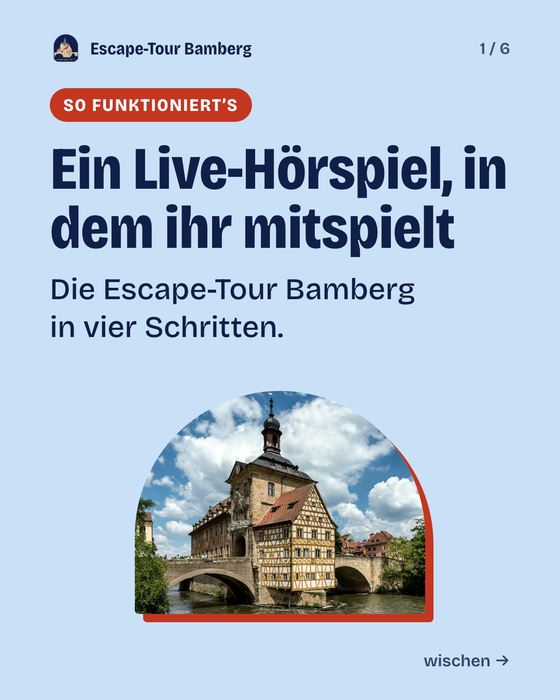
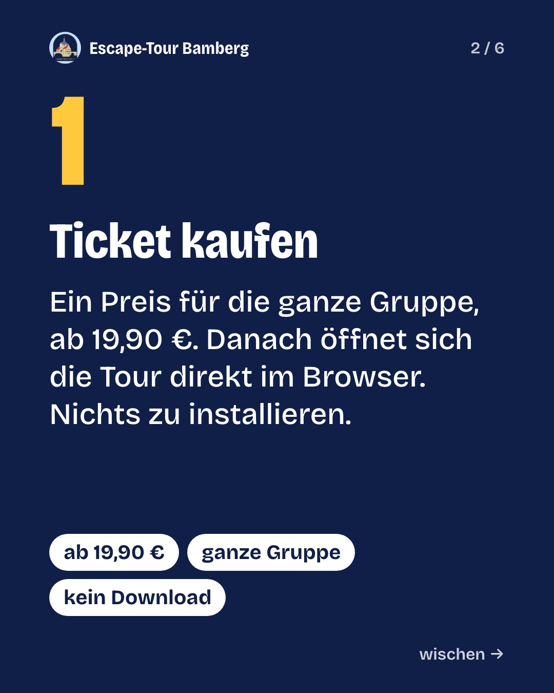
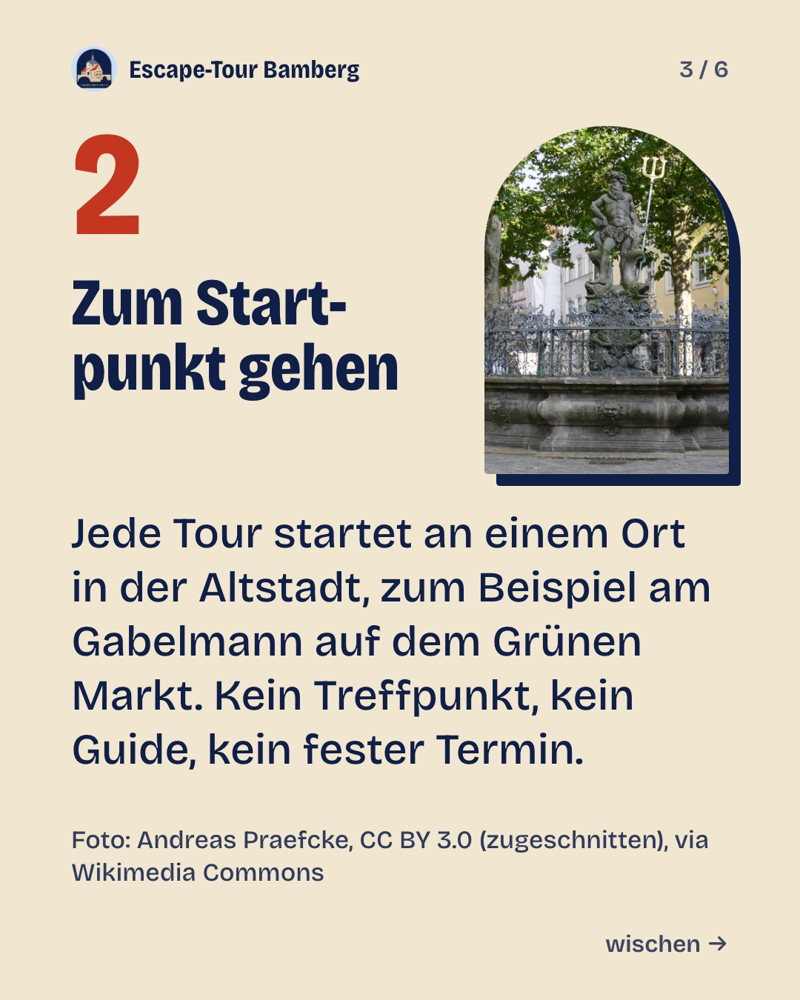
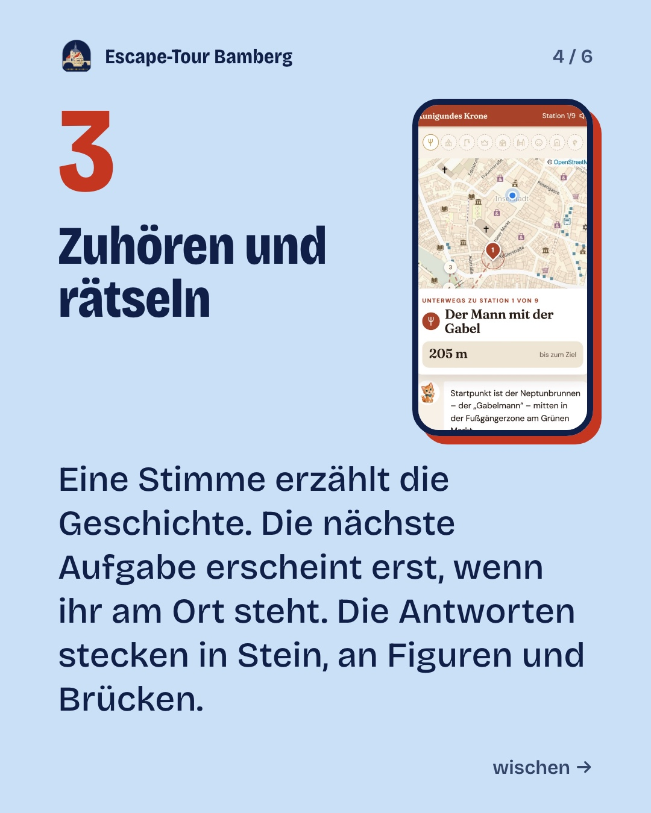
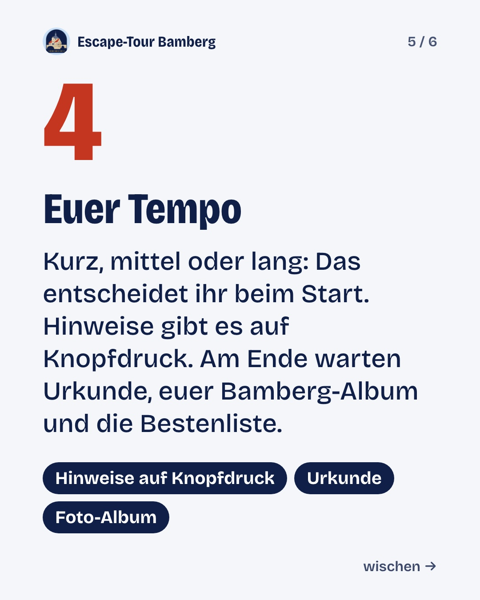

Dienstag, 27.10.2026 · 12:00
SliderGepostet





Escape-Tour Startpaket: So funktioniert’s
Ein Live-Hörspiel, in dem ihr mitspielt. So funktioniert’s 👇 1️⃣ Ticket kaufen: ein Preis für die ganze Gruppe, ab 19,90 €. 2️⃣ Zum Startpunkt gehen, zum Beispiel zum Gabelmann am Grünen Markt. Kein Treffpunkt, kein Guide, kein fester Termin. 3️⃣ Zuhören und rätseln: Die Aufgabe erscheint erst, wenn ihr am Ort seid. Die Antworten stecken in Stein, an Figuren und Brücken. 4️⃣ Euer Tempo: kurz, mittel oder lang, Hinweise auf Knopfdruck. Am Ende warten Urkunde, euer Bamberg-Album und die Bestenliste. Läuft im Browser, nichts zu installieren. Dazu die Geld-zurück-Zusage (Bedingungen auf der Website). Die Erzählstimmen sind KI-gestützt erzeugt. Alle Touren: Link im Profil. Foto Gabelmann: Andreas Praefcke, CC BY 3.0 (zugeschnitten), via Wikimedia Commons. #Bamberg #BambergErleben #EscapeTour #Stadtrallye #Franken #Oberfranken #Ausflugstipp #Hörspiel· Auf Instagram ↗